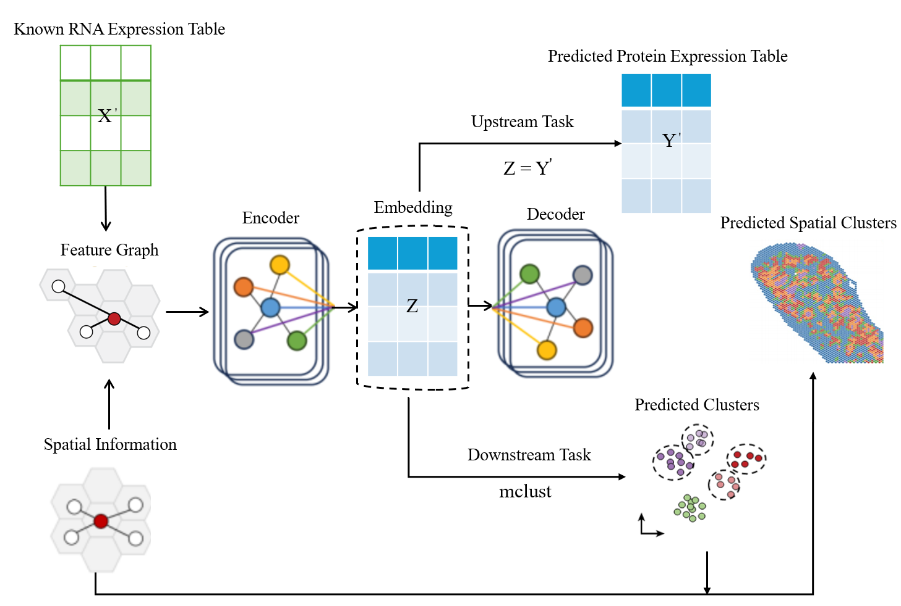
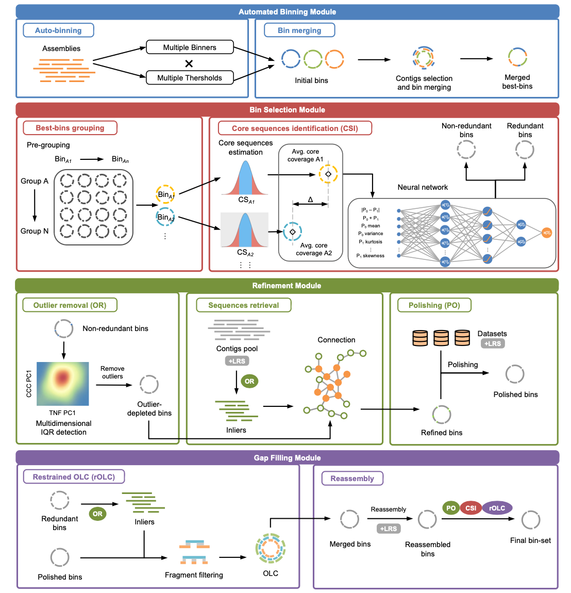

Hi, I am Zhaorui(Elijah) JIANG!
 Welcome to my personal web page! I am now the MPhil student at Peking University.
I hold a dual BEng (Hons) degree in Computer Science and Robotics from Ocean University of China and Heriot-Watt University.
My research interest is Science Intelligence (AI for Life Science)
Welcome to my personal web page! I am now the MPhil student at Peking University.
I hold a dual BEng (Hons) degree in Computer Science and Robotics from Ocean University of China and Heriot-Watt University.
My research interest is Science Intelligence (AI for Life Science)
Email: zrjiang25@stu.pku.edu.cn
Address: Edinburgh, Scotland, United Kingdom
Last update time: 2026.01.02
News and Highlights
 [2025/10] Congratulationas! OUC-China Team wins the Golden Medal in 2025 iGEM Competition. [Please Click the Link]
[2025/10] Congratulationas! OUC-China Team wins the Golden Medal in 2025 iGEM Competition. [Please Click the Link]
[2025/05] I was luckily invited to give a talk about GLM (Genomics Language Model) in BCML seminar, Heriot-Watt Uninversity.
[2024/11] I was luckily invited to give a talk about BASALT in BCML seminar, Heriot-Watt Uninversity.
[2024/09] Congratulationas! I has been admitted to Peking University!
[2024/09] I am honored to receive the National Scholarship!
[2024/08]First Version for OUC&HWU Survival Gudiance has been finished! [Please Click the Link]
Research and Project Summary
Spatial Multi-Omics

STProtein: predicting spatial protein expression from multi-omics data
Zhaorui Jiang, Yingfang Yuan, Lei Hu, Wei Pang
SPARTA AAAI 2026 Oral
[Paper]
[Code]
Microbiome

BASALT: Binning Across a Series of Assemblies Toolkit
Core Software Maintainer
Nature Communications
[Paper]
[Code]
Protein Design
Education
 Peking University, 2025-2028
Peking University, 2025-2028
• Master of Philosophy - MPhil, Bioenergy Engineering
• GPA: x.x/4.0
• Advised by A/Prof. Ke Yu
 Heriot-Watt University, 2021-2025
Heriot-Watt University, 2021-2025
• Bachelor of Engineering - BEng (Hons) - First Class, Robotics
• GPA: 4.0/4.0
• Advised by Prof. Wei Pang and Dr. Yingfang (James) Yuan
 Ocean University of China, 2021-2025
Ocean University of China, 2021-2025
• Bachelor of Engineering - BEng (Hons), Computer Science
• GPA: 3.8/4.0; Rank: 3/104 (Top 3%)
• Advised by Prof. Yongjian Gu, Dr. Xiaowei Zhou and A/Prof. Shugang Zhang
Research Experience
I feel fortunate to be become lab memeber or intern studnet in several prestigious universities
Lab Member in PKU EMBL, Peking University (2025.09 - Present)
• Topic: AI4Metagenomics and BASALT Software's Maintence and Development
• Advised by A/Prof. Ke Yu
 Research Assistant in THETA TEAM , Monash University (2025.09 - Present)
Research Assistant in THETA TEAM , Monash University (2025.09 - Present)
• AI4Vaccine and AI4CryoET
• Advised by A/Prof. Vivek Naranbhai, Prof. Shirui Pan and Dr. Yizhen Zheng
 Intern Student in Beijing Frontier Research Center for Biological Structure, Tsinghua University(2025.06 - 2025.09)
Intern Student in Beijing Frontier Research Center for Biological Structure, Tsinghua University(2025.06 - 2025.09)
• Topic: AI4Protein
• Advised by Dr. Xu Wang
 Intern Student in Advanced Research Institute of Multidisciplinary Sciences (2025.01 - 2025.09)
Intern Student in Advanced Research Institute of Multidisciplinary Sciences (2025.01 - 2025.09)
• Topic: Genomics Language Model
• Advised by Prof. Bin Shao
Lab Member in BCML Lab, Heriot-Watt University (2024.09 - 2025.05)
• Topic: STProtein: predicting spatial protein expression from multi-omics data
• Advised by Prof. Wei Pang and Dr. Yingfang (James) Yuan
 Intern Student in Programmable Active Matter Lab, Shanghai Jiao Tong University (2024.04 - 2024.07)
Intern Student in Programmable Active Matter Lab, Shanghai Jiao Tong University (2024.04 - 2024.07)
• Topic: GNN4Chemistry
• Advised by Prof. Wendong Wang
 Lab Member in Quantum Information and Intelligent Computing Team (2024.04 - 2025.06)
Lab Member in Quantum Information and Intelligent Computing Team (2024.04 - 2025.06)
• Topic: Hybrid Quantum Computing
• Advised by Prof. Yongjian Gu and Dr. Yanan Li
Industry Experience
 Intern in Kuoyue Intelligent Drug
Intern in Kuoyue Intelligent Drug
• Topic: AI4Antibody
• Advised by Dr. Xiaomei Han
 Researcher in LXLTXLab
Researcher in LXLTXLab
• Topic: AI4Organoids
• Co-Lead the AI4Bio Research Team with Dr. Pengzhi Hao
Acknowledgement
My study can not be possible without the support from my awesome friends, mentors, and collaborators! Check out some of them:
Prof. Ke Yu, Dr. Qiao Wang and Dr. Chihao Xu at Peking University
Ms. Yitong Zhao, Dr. Xu Wang and Mr. Peng Liu at Tsinghua University
Dr. Lei Hu at Westlake University
Dr. Yizhen Zheng and
A/Prof. Vivek Naranbhai at Monash University
Prof. Wendong Wang and Dr. Zhenyi Zhong Shanghai Jiang Tong Uninversity
Prof. Bin Shao at Beijing Institute of Technology
Prof. Wei Pang, Dr. Yingfang (James) Yuan, Dr. Yonghan Zhang, Dr. Kefan Chen and Mr. Jinhe Tang at Heriot-Watt University
Prof. Yongjian Gu, Dr. Xiaowei Zhou, A/Prof. Shugang Zhang, Mr. Yizhou Zhang and Dr. Yanan Li at Ocean University of China